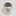
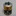
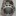
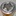
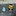
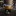
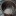
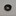
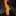

番外篇
這邊放置固態燃料測試或是其他燃燒相關內容。
索引
固態酒精二次燃燒爐
因為之前買的固態酒精塊都沒機會用，直接燒掉又很無聊，於是設計類似柴火爐般有雙層結構、底部進氣與二次進氣孔的燃燒爐。
* 貼鋁箔膠帶只是因為本來想磨掉外漆後來懶了就直接貼掉。

結構設計
一開始是設計成開四個尖角當作爐架，但後續差點發生意外。

底部進氣孔與內層下進氣孔，因為要方便清理，設計成僅有外殼罩住，底部直接挖空靠別的容器來裝酒精塊。

內層上半部有二次進氣孔，空氣從底部進氣孔進入後，除了從內層下進氣孔進入外，還會額外順著夾層往上到頂部的進氣孔加強燃燒。

實驗燃燒一塊酒精塊
使用一塊酒精已經不知道揮發多少的酒精塊，UCC罐子的蓋子剛好當作容器。

使用一塊燃燒時，火焰溫和卻有漂亮藍火

可惜一塊燒不開300ML的常溫水，僅只於冒小泡而已

觀察火焰可以發現底部與頂部進氣孔都有氣流；然後那個四尖角爐架已經默默的壓爛
酒精蠟塊缺點就是會積蠟要清掉

實驗燃燒兩塊酒精塊
改成燒兩塊後，爐子容量太小完全裝不下，是從底部硬塞進去的
額外加上的瓶口本來想要將杯子架高，結果燒一燒不穩杯子差點倒
臨時把他往下壓增加穩固，因為內部燃燒旺盛所以火焰不至於熄滅
水滾後拿開杯子，火焰竄得非常的高

裝太多酒精塊，燒完要清很麻煩（而且還有一些掉到地上燒到拖鞋）
結論
要實際運用的話爐體得要設計的更大才會比較實用，現在的真的只能當純粹娛樂。